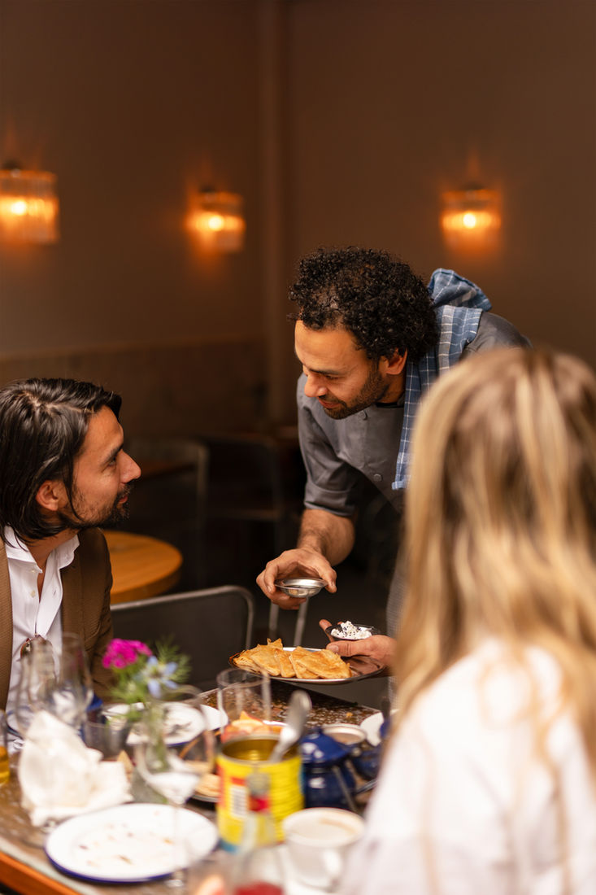
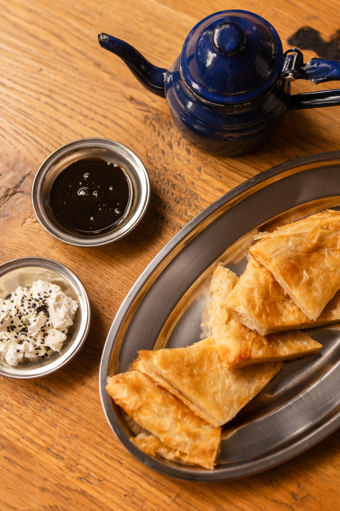
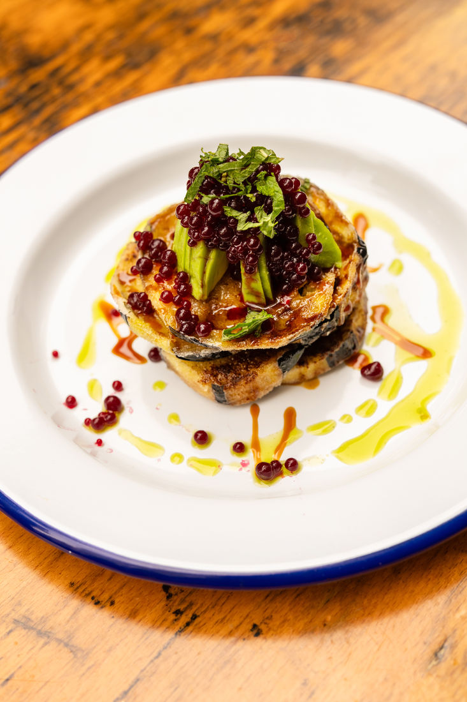
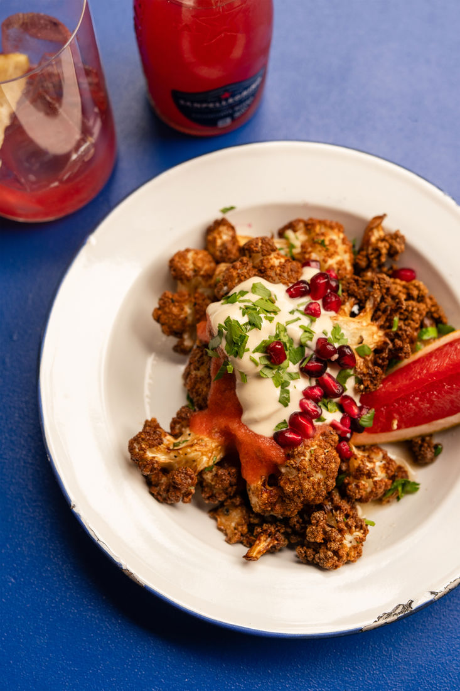
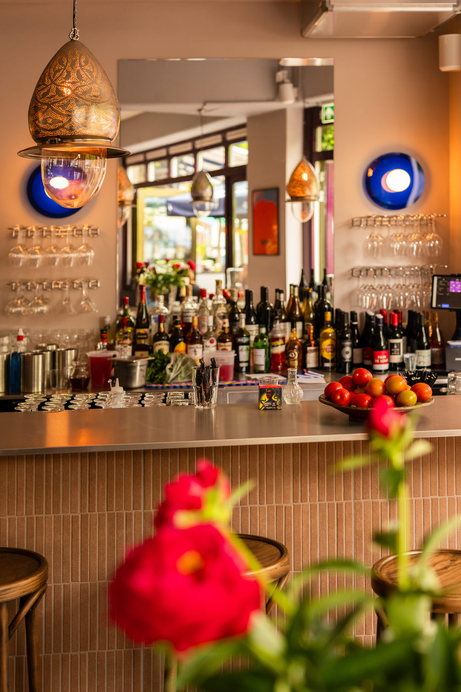
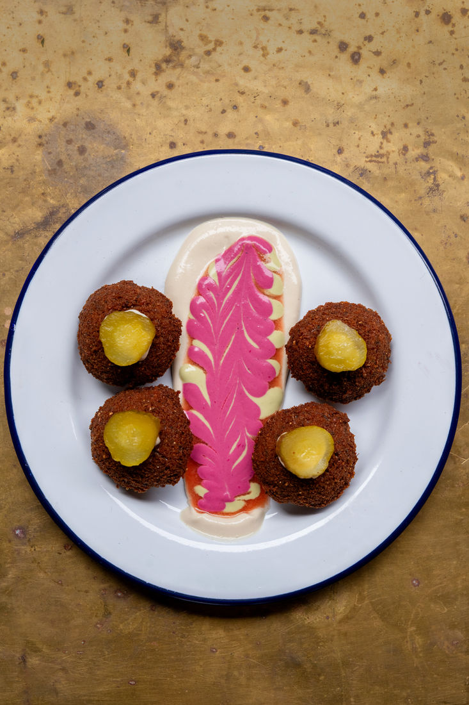
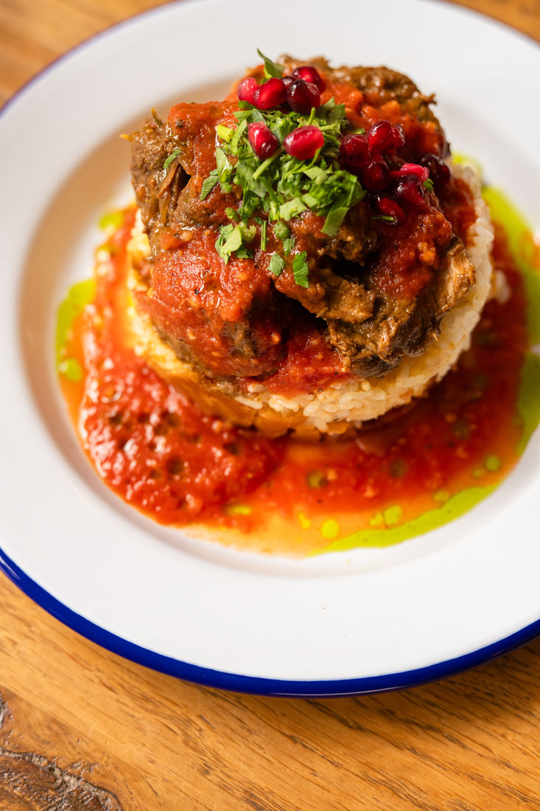
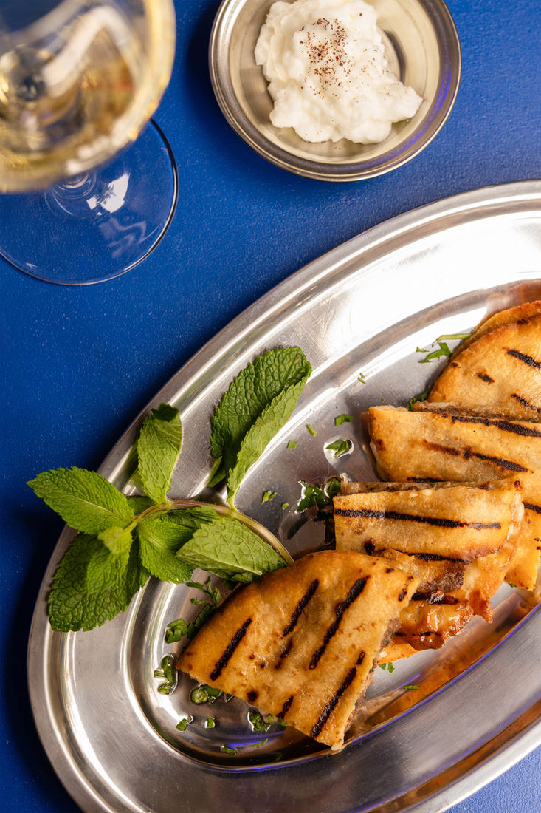
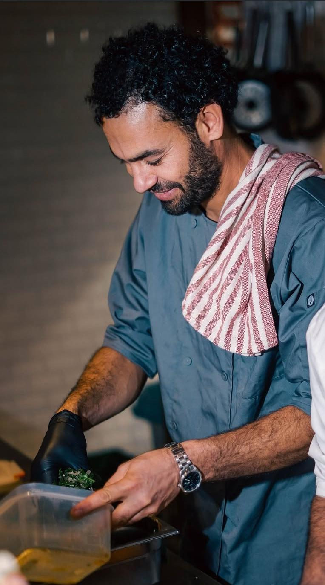
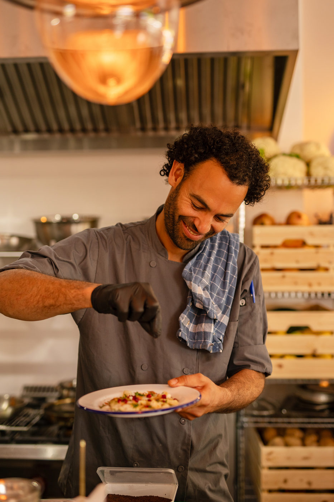

Nara Nara
Egyptische en Midden-Oosterse gerechten om te delen, aan het Dapperplein in Amsterdam.


Over Nara Nara
Rond het vuur, aan één tafel
De naam Nara Nara verwijst naar het Egyptische woord nar: vuur. Vuur is van oudsher een plek waar mensen samenkomen. Voor warmte, verbinding, verhalen en eten.
Bij Nara Nara brengen we klassieke Egyptische streetfood gerechten samen met invloeden uit het Middellandse Zeegebied en het Midden-Oosten. Het menu is geworteld in chef Saïds achtergrond, maar laat tegelijkertijd ruimte om nieuwe smaken te ontdekken.
Groenten spelen in veel van onze gerechten de hoofdrol. Voor wie niet zonder kan, staan er natuurlijk ook vis- en vleesgerechten op het menu. Samen eten en delen komt voort uit de Egyptische eetcultuur. Maar of je nu alles deelt of je favorieten liever voor jezelf houdt: jij maakt de tafel zoals jij die wilt.






Chef Saïd
Van het land in Egypte naar het Dapperplein
Chef Saïd, voorheen chef van Mana Mana, begint met Nara Nara aan een nieuw hoofdstuk: zijn eigen restaurant. Hij brengt zijn Egyptische roots naar de voorgrond, geïnspireerd door de smaken, tradities en de cultuur van samen eten waarmee hij is opgegroeid.
Hij groeide op op een boerderij in Egypte en werkte van jongs af aan op het land. Hij kent zijn ingrediënten van zaadje tot oogst: hoe ze groeien en wat ervoor nodig is om ze op tafel te brengen.
Sommige gerechten zijn herkenbaar Egyptisch. Andere beginnen met een herinnering of een Egyptisch ingrediënt, zoals dukkah of hibiscus, en groeien uit tot iets nieuws. Goed eten om te delen, drankjes om van te genieten, Egyptische muziek, warme energie en een tafel waar je graag wat langer blijft.
Het eten is geworteld in Egypte, de ervaring is gevormd door Amsterdam.


Bezoek
Tot aan het Dapperplein
Openingstijden
- Woensdag – vrijdag17:30 – 23:00
- Zaterdag – zondag12:00 – 23:00
Tafel reserveren?
Bel 020 354 6269 of mail info@naranara.nl.